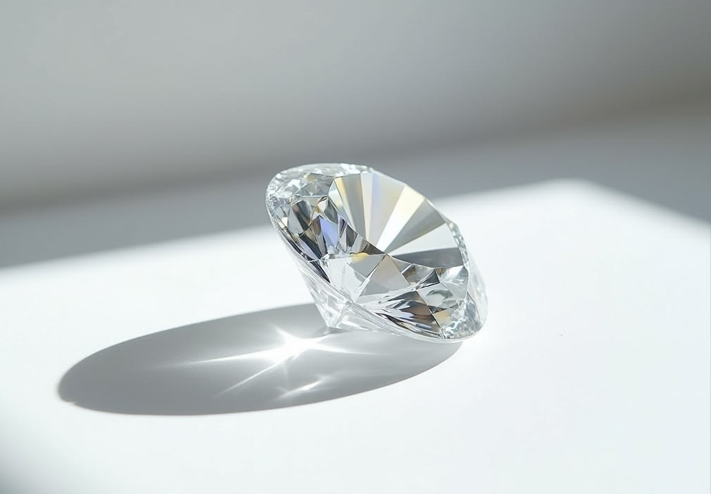
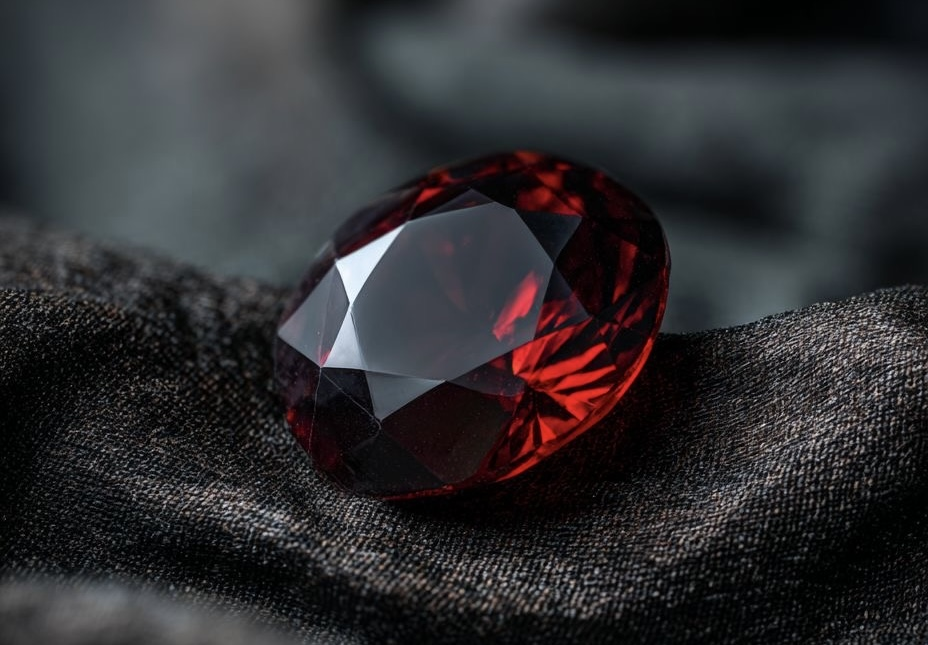
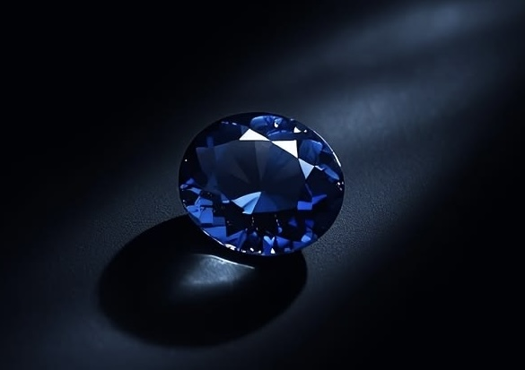
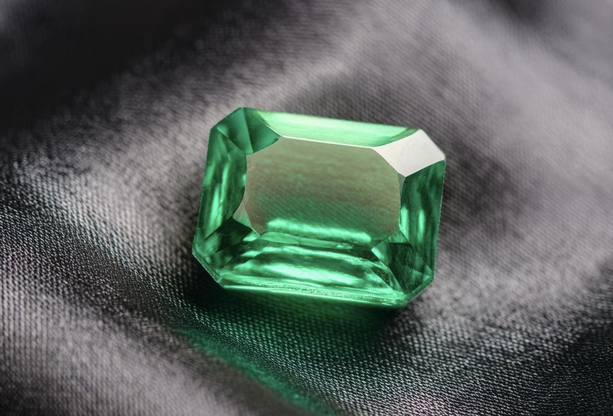
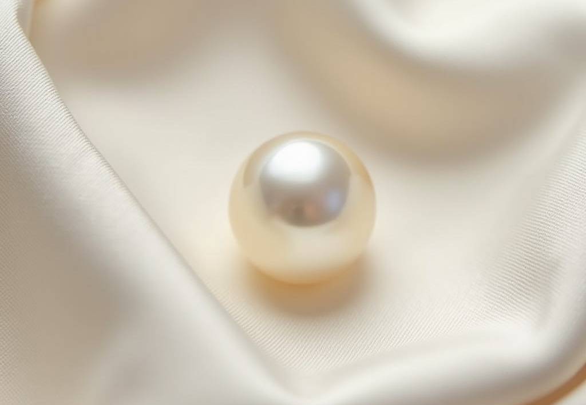
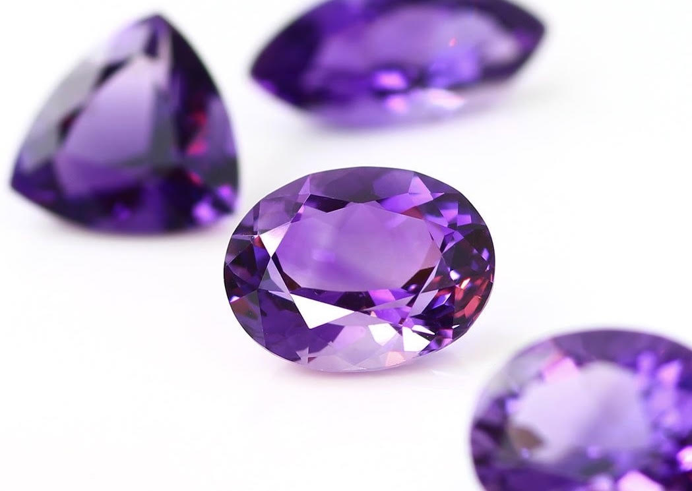

- トップ >
- 宝石の種類
宝石の種類と産地
お客様が宝石を選ぶ際に知っておきたい情報をまとめています。
ダイヤモンド

ダイヤモンドは地球上で最も硬い天然物質（硬度10）であり、宝石の王様として広く親しまれています。 主な産地はボツワナ、ロシア、カナダ、オーストラリアなどです。品質の評価には「4C」（カラット・カット・カラー・クラリティ）が用いられます。 無色透明のものが最も価値が高いとされますが、ブルー・ピンク・イエローなどのカラーダイヤも人気です。
ルビー

ルビーはコランダム（酸化アルミニウム）の一種で、クロムの含有により鮮やかな赤色を呈します。 最高品質とされる「ピジョンブラッド（鳩の血）」と呼ばれる深みのある赤色のルビーは、ミャンマー（旧ビルマ）のモゴック産が有名です。 そのほかタイ、スリランカ、モザンビークなどでも産出されます。情熱・愛情の象徴として、7月の誕生石でもあります。
サファイア

サファイアもルビーと同じコランダムの一種で、鉄やチタンの含有により青色を呈します。 スリランカ、カシミール（インド・パキスタン）、ミャンマーが主要産地です。特にカシミール産は「コーンフラワーブルー」と呼ばれる鮮やかな青が特徴で最高級とされます。 青以外にも、ピンク・イエロー・パープルなど多彩な色があります。9月の誕生石です。
エメラルド

エメラルドはベリルの一種で、クロムやバナジウムの含有により深緑色を呈します。 コロンビアのムゾー産が世界最高品質とされ、ブラジル、ザンビア、ジンバブエなどでも産出されます。 内包物が多いのが特徴で、これを「ジャルダン（庭）」と呼び、産地を見分ける手がかりになります。5月の誕生石であり、クレオパトラも愛した歴史ある宝石です。
パール（真珠）

真珠は貝の体内で生成される有機宝石です。日本の「アコヤ真珠」は世界的に高く評価されており、 三重県・愛媛県などが主な産地です。南洋真珠（オーストラリア・インドネシア産）は大粒で存在感があり、 タヒチ産の黒蝶真珠は独特の暗色光沢が魅力です。6月の誕生石として親しまれています。
アメジスト

アメジストは紫色の水晶（クォーツ）で、鉄の含有とガンマ線の照射により美しい紫色を呈します。 ブラジルのリオグランデ・ド・スル州が世界最大の産地で、ウルグアイ産は深い紫色が特徴です。 古代から「酔いを防ぐ石」として珍重されてきた歴史があります。2月の誕生石です。